Отчеты¶
Любой отчет можно открыть из панели быстрых кнопок. Каждый отчет имеет возможность фильтрации, группировки исходных данных и сохранения выбранных параметров. Функции управления отчетом располагаются в нижней части экрана. При открытии отчета из списка или другого отчета наследуются установленные фильтры.
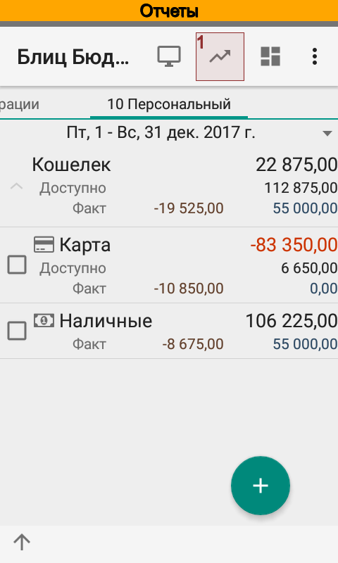 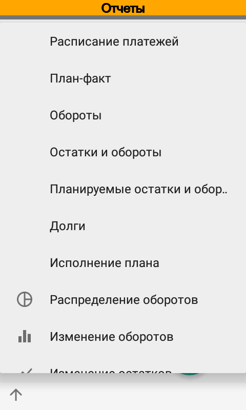 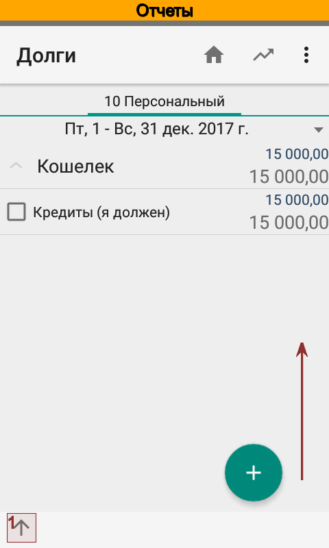 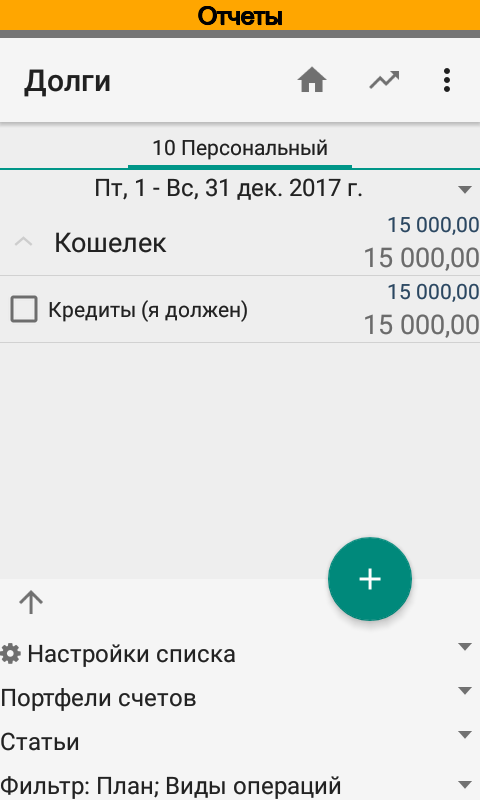 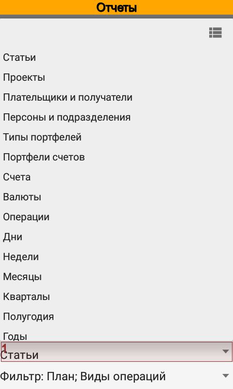{kind=link}
{kind=link}
{kind=link}
{kind=link}
{kind=link}
Из отчета всегда можно открыть исходные операции, чтобы понять из чего состоит та или иная цифра.
Также для отчетов можно создавать ярлыки для быстрого доступа к отчетам с заранее подготовленными параметрами. Ярлыки запускаются из окна оболочки Android.
Расписание платежей¶
Отчет предназначен для планирования предстоящих операций. Расписание отображает не только плановые, но и фактические операции, если они находятся в выбранном периоде. Например, можно увидеть не только сколько запланировано расходов на текущую неделю, но и сколько расходов уже оплачено.
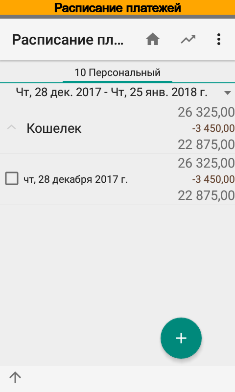 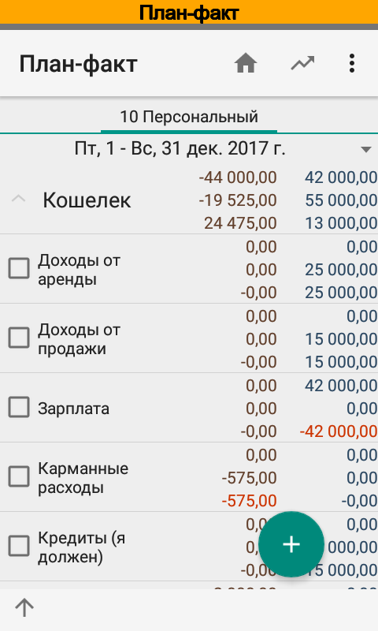 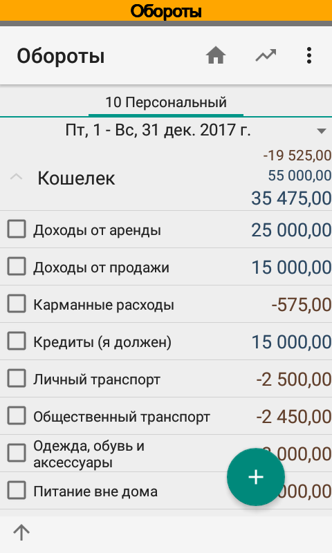{kind=link}
{kind=link}
{kind=link}
План-факт¶
Отчет служит для выявления отклонений между запланированными и фактическими движениями в заданном периоде. Так, например, из отчета видно, что по статье Доходы от аренды прошло внеплановое поступление денежных средств, а по статье Зарплата запланированные денежные средства еще не поступили.
Отчет можно сформировать как в разрезе аналитик, так и в разрезе периодов.
Обороты¶
Отчет служит для просмотра агрегированных движений в заданном периоде. Так, например, из отчета видно, что по статье Кредиты (Я должен) было поступление денежных средств, по статье Карманные расходы было списание и т.д.
Отчет можно формировать как по фактическим, так и по планируемым операциям. По умолчанию отчет формируется по фактическим операциям.
Остатки и обороты¶
Отчет служит для просмотра начальных, конечных остатков и агрегированных движений в заданном периоде. Отчет формируется только по фактическим операциям.
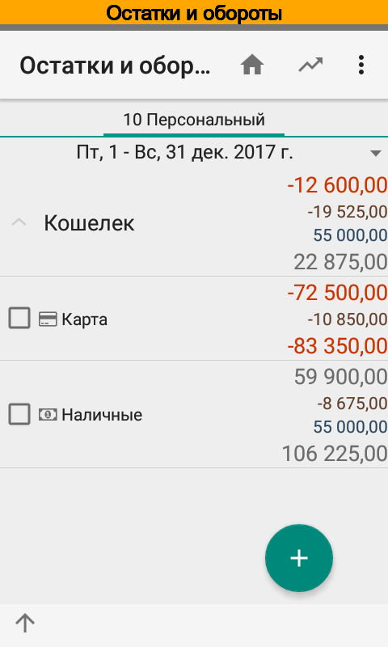 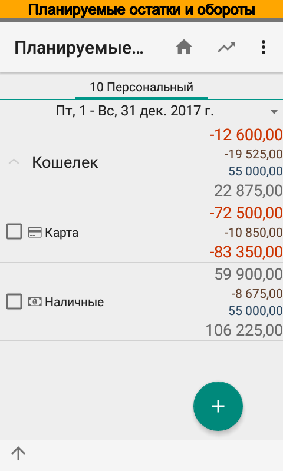 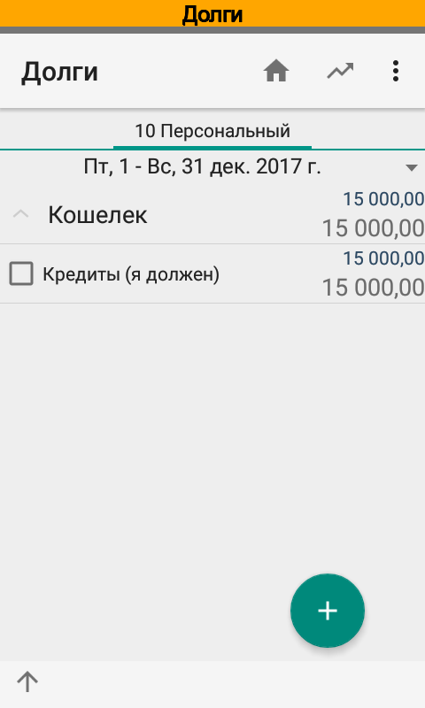{kind=link}
{kind=link}
{kind=link}
Планируемые остатки и обороты¶
Отчет служит для просмотра начальных, конечных остатков и агрегированных планируемых движений в заданном периоде. Отчет формируется только по планируемым операциям.
Долги¶
Отчет формируется по операциями, которые содержат статьи с признаком Суммируемая и при этом являются одновременно и доходными и расходными. Суммы таких операций складываются, отчет показывает начальный, конечный остатки и движения за выбранный период. Нулевые суммы скрываются.
Так, например, из отчета видно, что по статье Кредиты (Я должен) на начало периода не было остатка. Затем в течение периода было зачисление, т.е. был получен кредит. Погашения кредита не было, поэтому конечный остаток совпадает с суммой зачисления.
Исполнение плана¶
Отчет Исполнение плана формируется по плановым и фактическим операциями, которые содержат статьи с признаком Суммируемая и являются либо доходными, либо расходными. Из суммы плановых операций вычитается сумма фактических, отчет также показывает начальный, конечный остатки и движения за выбранный период. Нулевые суммы скрываются.
Так, например, из отчета видно, что по статье Зарплата на начало периода есть остаток плана, т.е. фактическая сумма движений по статье Зарплата меньше запланированной. По этой статье также в течение выбранного периода запланировано поступление денежных средств. Однако фактического движения не было.
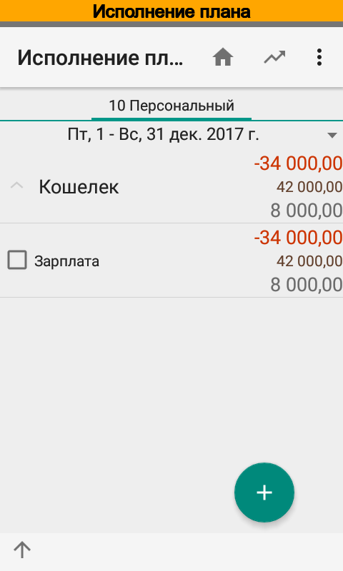 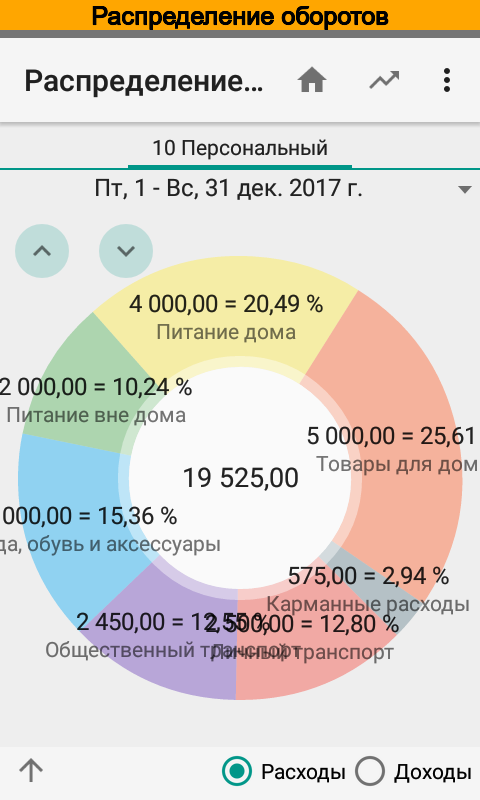 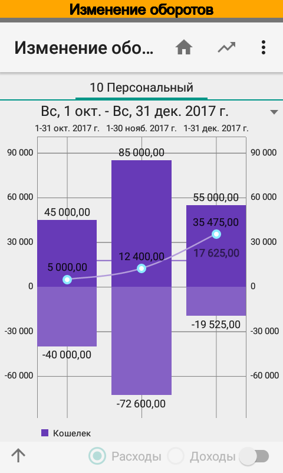{kind=link}
{kind=link}
{kind=link}
Распределение оборотов¶
Диаграмма служит для анализа распределения движений денежных средств. Отчет имеет два режима формирования — по расходам и по доходам. Иногда не все названия помещаются на экране или накладываются друг на друга. Чтобы увидеть такие значения, просто вращайте график против часовой стрелки.
Изменение оборотов¶
График служит для анализа и выявления тенденций движений денежных средств. В положительной части графика отображаются доходы, в отрицательной — расходы.
Изменение остатков¶
График служит для анализа и выявления тенденций в изменениях остатков денежных средств. Возможно одновременное отображение фактических и планируемых остатков.
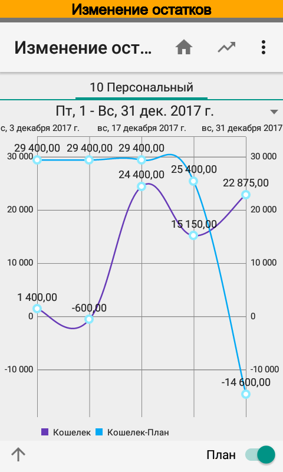{kind=link}